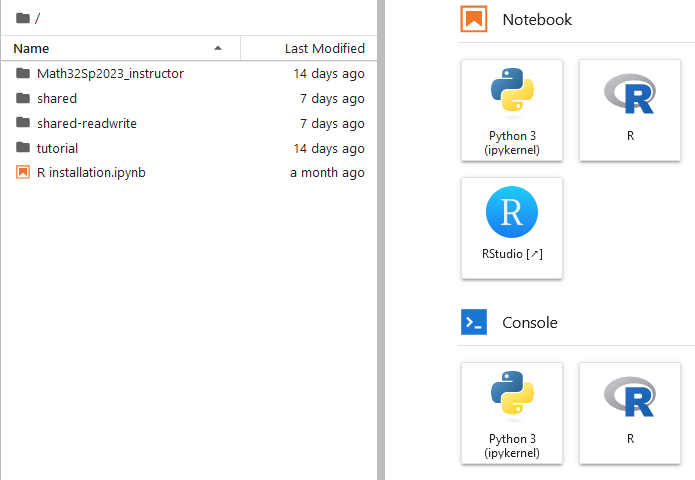
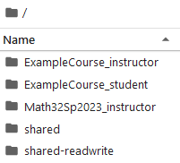
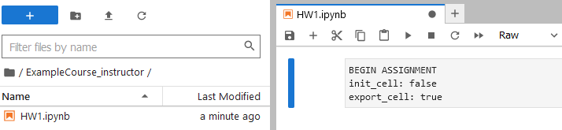
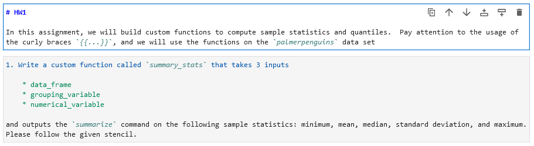
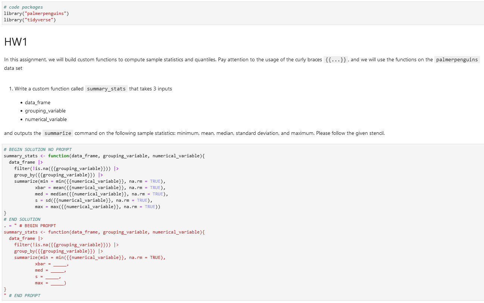
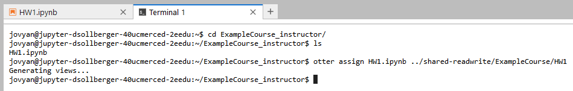
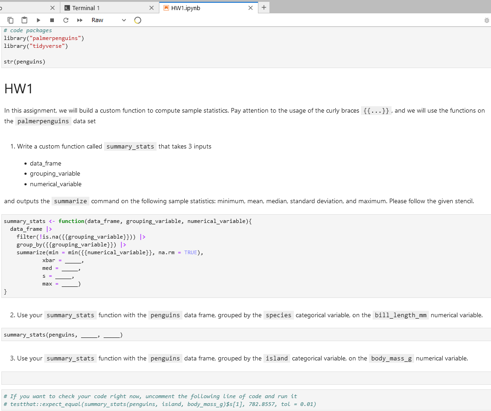

library("palmerpenguins")
library("tidyverse")2i2C Showcase at UC Merced
The following is a quick presentation for my share of the JupyterHub pilot showcase at UC Merced. We met with the 2i2c hosting service along with campus partners to explore the capabilities of the software hub.
Login
At UC Merced, our 2i2c server is located at
Each user sees a shared and a shared-readwrite folder

File Structure
For this demonstration, I have made the following directories in the root directory.
ExampleCourse_instructorExampleCourse_student
along with an ExampleCourse inside the shared-readwrite directory.

Making an Assignment
This semester, I taught classes with the R programming language, and here I will continue to use R. I start my work inside of the ExampleCourse-instructor directory. We will create an assignment inside of a Jupyter notebook, but with an R kernel. In other words, click on the “R” button under “Notebook”
This script has been named HW1.ipynb.
The 2i2c server comes with the Otter Grader tools built by data science faculty at UC Berkeley. Instructors can highly customize the functionality of these files with the initialization cell (a raw code block).

My colleagues and I have discussed ways to ease beginning students into the skills of installing code packages. For the sake of visual brevity, here I will assume that the code packages have been installed already.
# code packages
library("palmerpenguins")
library("tidyverse")
str(penguins)Prompts
Instructions for the student can be made with normal typing augmented by markdown as this notebook environment is built for literate programming.

# HW1
In this assignment, we will build a custom function to compute sample statistics. Pay attention to the usage of the curly braces `{...}`, and we will use the functions on the `palmerpenguins` data set1. Write a custom function called `summary_stats` that takes 3 inputs
* data_frame
* grouping_variable
* numerical_variable
and outputs the `summarize` command on the following sample statistics: minimum, mean, median, standard deviation, and maximum. Please follow the given stencil.Writing a Problem
Inside of a code cell, an instructor can type in the intended answer between # BEGIN SOLUTION and # END SOLUTION comments. From there, what the student will see falls between the # BEGIN PROMPT and # END PROMPT comments.

1. Write a custom function called `summary_stats` that takes 3 inputs
* data_frame
* grouping_variable
* numerical_variable
and outputs the `summarize` command on the following sample statistics: minimum, mean, median, standard deviation, and maximum. Please follow the given stencil.# BEGIN SOLUTION NO PROMPT
summary_stats <- function(data_frame, grouping_variable, numerical_variable){
data_frame |>
filter(!is.na({{grouping_variable}})) |>
group_by({{grouping_variable}}) |>
summarize(min = min({{numerical_variable}}, na.rm = TRUE),
xbar = mean({{numerical_variable}}, na.rm = TRUE),
med = median({{numerical_variable}}, na.rm = TRUE),
s = sd({{numerical_variable}}, na.rm = TRUE),
max = max({{numerical_variable}}, na.rm = TRUE))
}
# END SOLUTION
. = " # BEGIN PROMPT
summary_stats <- function(data_frame, grouping_variable, numerical_variable){
data_frame |>
filter(!is.na({{grouping_variable}})) |>
group_by({{grouping_variable}}) |>
summarize(min = min({{numerical_variable}}, na.rm = TRUE),
xbar = _____,
med = _____,
s = _____,
max = _____)
}
" # END PROMPT2. Use your `summary_stats` function with the `penguins` data frame, grouped by the `species` categorical variable, on the `bill_length_mm` numerical variable.# BEGIN SOLUTION NO PROMPT
summary_stats(penguins, species, bill_length_mm)
# END SOLUTION
. = " # BEGIN PROMPT
summary_stats(penguins, _____, _____)
" # END PROMPT3. Use your `summary_stats` function with the `penguins` data frame, grouped by the `island` categorical variable, on the `body_mass_g` numerical variable.# BEGIN SOLUTION NO PROMPT
summary_stats(penguins, island, body_mass_g)
# END SOLUTION
. = " # BEGIN PROMPT
" # END PROMPTTest That
Advanced R programmers, especially those that make code packages, use the testthat package to create unit tests to verify that functions are working as intended. The Otter Grader framework continues this idea for making assignments in R.
# If you want to check your code right now, uncomment the following line of code and run it
# testthat::expect_equal(summary_stats(penguins, island, body_mass_g)$s[1], 782.8557, tol = 0.01)Assigning the Assignment
Now we will show the power of Otter Assign! Inside JupyterHub, open a terminal connection
- File –> New –> Terminal
Use the cd Unix command to navigate to the instructor files.
cd ExampleCourse_instructor/Since our assignment is called HW1.ipynb, we will assign that notebook into the shared-readwrite directory. Tip: it is also a good idea to create a new directory for each homework assignment (to later manage solution files and student submissions).
otter assign HW1.ipynb ../shared-readwrite/ExampleCourse/HW1
Verify that the HW1 directory was created within shared-readwrite/ExampleCourse.
Student View
We also find our HW1 directory inside the shared directory. The shared directory is in a read-only state, so students will not be able to edit and save their work there.
The easiest route is for a student to download the HW1.ipynb file and then upload it into their ExampleCourse_student directory. Advanced users can use Unix commands for this copy.
cp shared/ExampleCourse/HW1/student/HW1.ipynb ExampleCourse_studentNotice how the student receives only the partial prompts and is ready for some homework!

LearnR
If I have time, I can demonstrate the LearnR apps for this audience. In short, the LearnR apps also have autograding for instructors and guidance for students. (The complexity of the apps is beyond the scope and time of this presentation.)
learnr::run_tutorial("Math32Sp2023_instructor/Math32LearnR5.rmd")